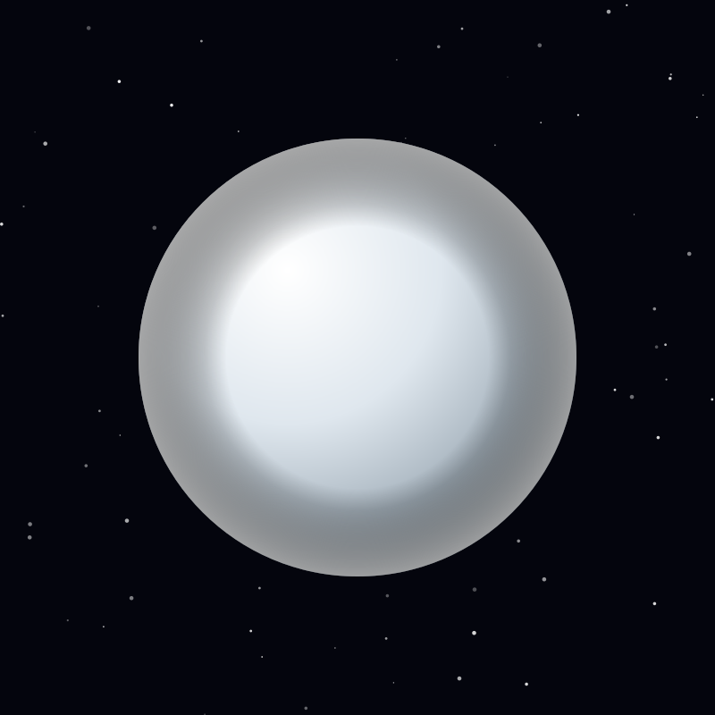

Moon
Triton
Neptune's largest moon orbits backwards, and its frozen surface erupts geysers of nitrogen — a captured Kuiper Belt world.
Object 15 of 26

Key facts
- Distance from Earth
- 4.50 billion km (avg)
- Radius
- 1,353 km
- Surface gravity
- 0.78 m/s²
- Orbital period
- 5.88 days (retrograde)
- Surface temperature
- -235°C (coldest measured)
- Atmosphere
- Thin nitrogen
- Surface features
- Nitrogen geysers
- Discovered
- 1846, William Lassell
Overview
Triton is Neptune's largest moon, holding 99.5 percent of the mass of the entire Neptunian satellite system, and it orbits in the opposite direction to Neptune's rotation. That backwards orbit is the giveaway: Triton did not form here.
It is almost certainly a captured Kuiper Belt object — a dwarf-planet-like world that strayed too close and was taken. Its surface composition and density match those of Pluto more closely than they match Neptune's other moons.
A Frozen Surface
Triton's surface is among the coldest measured anywhere, at -235°C, covered in nitrogen, carbon monoxide and methane ices. Much of it is 'cantaloupe terrain', a dimpled landscape unlike anywhere else, and craters are rare and small — the surface is young.
Voyager 2 photographed dark plumes rising 8 kilometres high and streaming downwind for 150 kilometres: geysers of nitrogen gas carrying dark dust, erupting as sunlight warms buried volatile ices.
Orbital Decay
Because Triton orbits backwards, tides are draining its orbital energy rather than adding it. The moon is slowly spiralling inward, and in roughly 3.6 billion years it will cross the Roche limit.
There Neptune's gravity will pull it apart, building a ring of debris far brighter than Neptune's present rings — a glimpse of how rings around giant planets may have formed in the first place.
Exploration
Voyager 2's flyby in August 1989 remains the only visit. It lasted a few hours, yet revealed geysers, a tenuous atmosphere and a strange world nobody had predicted.
A proposed Neptune Orbiter would study Triton's interior — models suggest a liquid water ocean may survive from radioactive heating — and determine whether this captured Kuiper Belt world could support conditions for life.